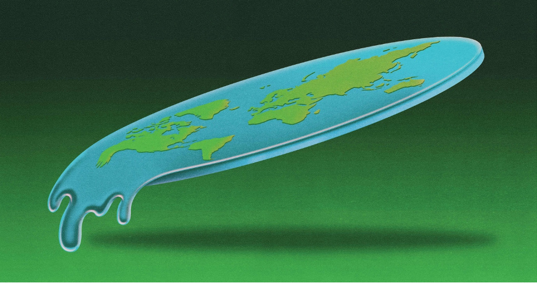
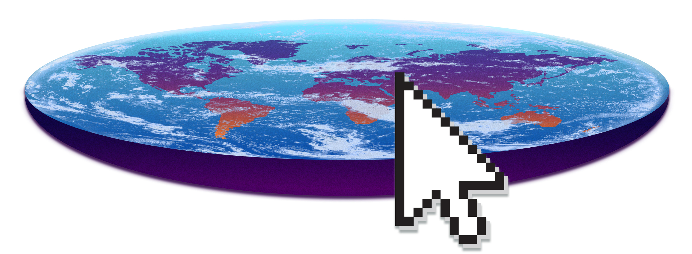
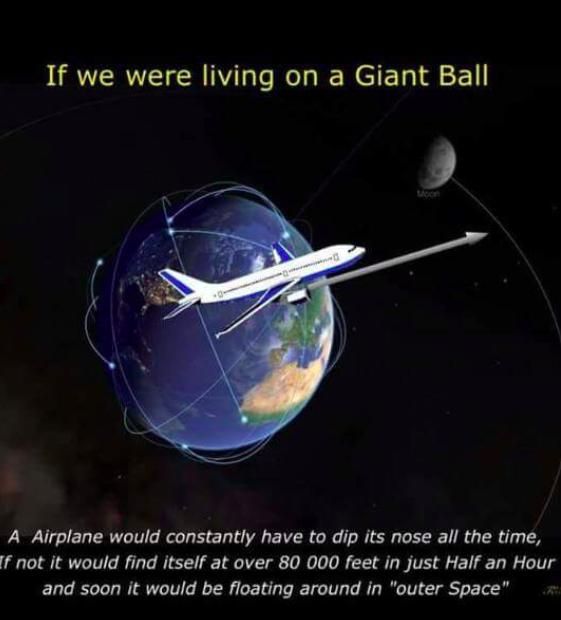
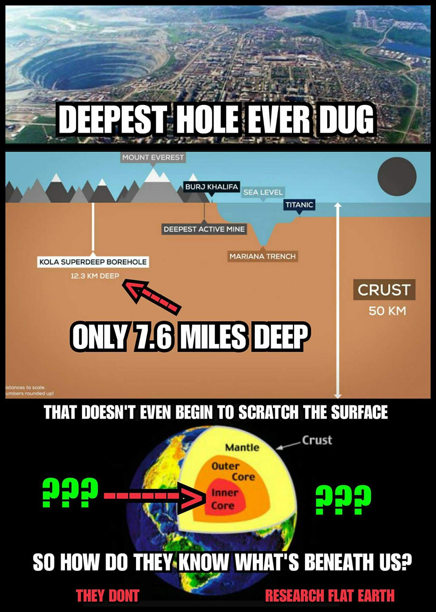
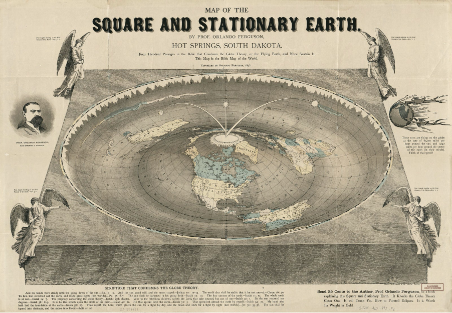

If a Conspiracy Theory is Funny, that Doesn't mean it's a Joke
If you feel like flat Earth theory has gotten unaccountably popular recently, you’re right.

According to Google Trends, search interest in the flat Earth conspiracy theory has already had several distinct peaks in the last year. Interest in the topic has been climbing steadily since late 2014, shortly after a faction of Daniel Shenton’s Flat Earth Society broke away to create its own website and forum. Encouraging people to distrust science completely, as the best way to experience reality by relying on one’s own senses to discern the true nature of the world around us. News outlets contribute too, capitalising on a basic human interest in mysteries. Flat Earthers have received extensive coverage contributing to its ongoing popularity by feeding the appetite for these stories.
"They're capitalising on a basic human interest in mysteries whilst also wading into an online environment where it's impossible to differentiate a joke from a deeply held belief"
Digital newsrooms churn out coverage of flat Earth truthers using tools that make it easy to find stories bubbling up from the depths of Reddit. Here’s how it works: conspiracy theories get people fired up enough to comment promiscuously, bringing them to the front of Reddit where journalists see them. When a reporter writes an explainer of a new oddball conspiracy theory, the sharing and hate commenting that drove the theory to the top of Reddit reoccurs on Facebook. And, if the post is coming from a generally reputable outlet or involves a celebrity or a major news event, it can also get a boost into the Top Stories slot on Google News. “Newsrooms watch each other’s highest-performing stories.” It’s common practice to use a tool that lets newsrooms make lists of their competitors and monitor the popularity of their posts to see what’s doing well for other outlets, and what might be a sure traffic bet if they could find a fresh angle or a reason to weigh in. “People see all the traffic to be had and look for the next thing trickling up from Reddit.”
Why the flat Earth theory is spreading online
The flat Earth theory is spreading online, and it’s hard to tell where the joke begins or ends. We can prove that hundreds of thousands of people are aware of an obscure belief that they weren’t before, but we can’t prove whether this has actually converted a substantial number of them to the cause. The United States has been “crazy with conspiracy theories” since before the Revolutionary War, Fenster says; the percentage of Americans who believe in some conspiracy or another around the JFK assassination has hovered between 60 and 80 percent for the last 50 years. But, “there are fun and games with conspiracy theorizing,” he says. “We don’t really believe them, but we know a lot about them, but maybe we do believe them a little, but we’re actually just sort of joking and playing. People are doing that winking thing on Reddit. You can do these fun and games and never really be called on it.”

It’s true that the theory is so absurd as to be kind of funny, and it’s fair to say that people who believe in it aren’t directly endangering anyone’s lives. That’s one explanation as to why people might click on a flat Earth thread even though they would never share an anti-vaccine meme or a joke about AIDS being a hoax. Still, there’s something unnerving about cultivating an online environment in which none of our actions are sincere: a click is an ironic click; a share is a hate-share; a comment is tongue-in-cheek, play-acting, or just “lol.”
"The flat earth society posits that the idea of a round earth is somehow related to the faking of the moon landing."
There are hundreds of memes making fun of flat Earth by feigning a devout belief in it, and a lot of them are pretty entertaining. Know Your Meme even counts “Flat Earth” as a genre of meme, and provides a helpful timeline of its spread, mainly across Reddit. Know Your Meme editor Matt Schimkowitz told me there’s a rhythm to the growth of theories like flat Earth. They’ll show up on 4chan and Reddit and believers will start out as the subject of ridicule. Their belief will become a joke that’s repeated faux-sincerely and increasingly emphatically by people who consider everything they say to be “ironic.” That’s where memes come in, and in this case they represent a style of mockery that looks an awful lot like agreement. “From there it can kind of spiral,” he says. “It can attract people who are looking to believe in these kinds of things, looking for things to confirm what they believe — like the government’s out to get them, scientists are lying to us, that sort of deal. What starts as an ironic thing eventually reaches people who are willing to go along with it. From there you have sort of full-blown conspiracy theories. It reaches a new level.”

“You can turn people into something different just through irony,” he says. He noticed this trend in the wake of the 2016 election and in countless excavations of the online dens of the alt-right, where people would start out saying they were just joking about racism or anti-Semitism. But engaging with that type of humor for long enough could eventually radicalize them. He says he sees the same process happen with conspiracy theories. If you can get people to ironically question systems like NASA and the federal government and the scientific process in general, you can sometimes get them to question those things for real.

"Conspiracy theorists attack expertise."
Schimkowitz understands that flat Earth trutherism isn’t as immediately dangerous as climate change denialism or the anti-vaccine backlash, but that doesn’t mean it’s totally harmless. “I think it is important to maintain a level of concern about [conspiracy theorists],” he says. “They do things that harm society as a whole, like negate or dilute scientific reason. That’s something that’s having profound impact on everyone. Looking at climate change denialism, that comes from just doubting the idea of expertise as a whole. Conspiracy theorists attack expertise.”
Though Schimkowitz is speaking only to his experience with conspiracy theories on 4chan and Reddit, sociologist Ted Goertzel, who specializes in researching scientific conspiracy theories at Rutgers, told me almost the exact same thing. The basic goal of a conspiracy theorist, he says, isn’t usually to prove that one specific theory is true or false, but “to prove that nothing is provable, that all assertions are arbitrary.” He, too, sees an obvious case study in the recent election cycle, arguing that this is the type of thinking that leads people to believe that absolutely everything is “arbitrary and manipulative,” and that anything they don’t agree with is “fake news.”

In September, Kyrie Irving told Boston radio host Rich Shertenlieb he was just kidding about being a flat Earther. He just wanted to have an “open conversation” and prove a point: “[If] I believe that the world is flat, and you believe that the world is round, does that knock my intellectual capacity, or the fact that I can think different things than you can?”
It’s hard to call him on it. He’s just joking
Digital Culture
If a Conspiracy Theory is Funny, that Doesn't mean it's a Joke
Next Article